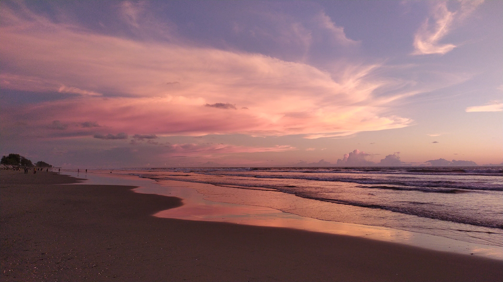

Marcus& Gabriela
Sábado, 8 de maio de 2027
Cerimônia às 16h30, na Casa Lumar, em Guarapari
Escolhemos a hora em que o céu fica cor-de-rosa para dizer sim. Queremos você lá, de pés na areia, quando o sol encostar no mar.
Faltam … dias, … horas e … minutos. Chegou o dia.
Ao pôr do sol, em Guarapari
O dia, hora a hora
Chegada
Recebemos todos com calma, antes da cerimônia.
Cerimônia
Com o sol baixando sobre o mar.
Pôr do sol
Um brinde de todos no momento em que o sol se põe.
Jantar
Mesa posta para celebrar juntos.
Festa
Pista aberta até o último convidado de pé.
Como chegar e o que vestir
Local
Casa LumarRua Maria U. Camarão, 12, Perocão
Região da Praia de Santa Mônica, Guarapari – ES
Traje
Esporte fino de praia. Tecidos leves e tons pastel combinam com o céu; o branco fica para quem casa.
- Rosa concha
- Pêssego
- Lilás
- Verde-água
Na areia, rasteiras e saltos grossos funcionam melhor que salto fino.
Onde ficar
Guarapari tem boas pousadas e hotéis perto da Casa Lumar. Se quiser indicação, fale com a gente.
Confirme sua presença
Responda até 1º de fevereiro de 2027 para a gente reservar seu lugar à mesa.
Convite individual. Entrada somente com nome na lista.
Prévia do site. A confirmação de presença abre em breve.
Obrigado, .
Presença confirmada. Nos vemos em Guarapari, ao pôr do sol.
Recebemos sua resposta. Vamos sentir sua falta e brindar por você.